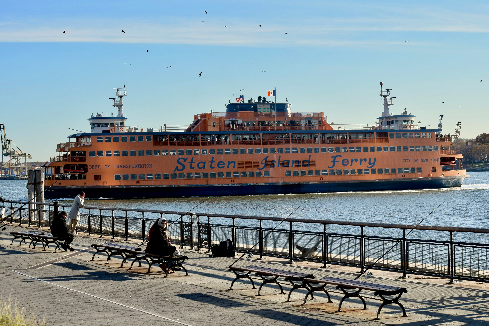

Staten Island Ferry
The Staten Island Ferry links Manhattan and Staten Island across New York Harbor and offers free rides with stunning skyline views.

About
Built: The ferry started in 1817 with the Richmond Turnpike Company running service. Several mergers and sales later, the New York City government took control in 1905.
Today: Established in its modern form in the early 19th century, it remains one of the busiest ferry services in the U.S. today serving millions of passengers a year. Beyond its transit function, the ferry ride has become a scenic experience for visitors looking for views of the harbor and the Statue of Liberty in the distance.
Directions
For a trip starting in Manhattan, go to Whitehall Terminal at 4 South Street. The Staten Island end of the route is St. George Terminal at 1 Bay Street.